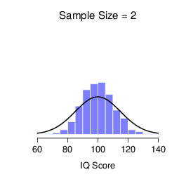
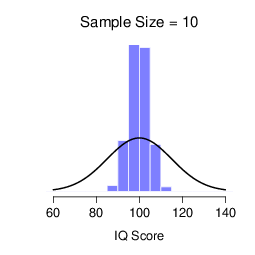
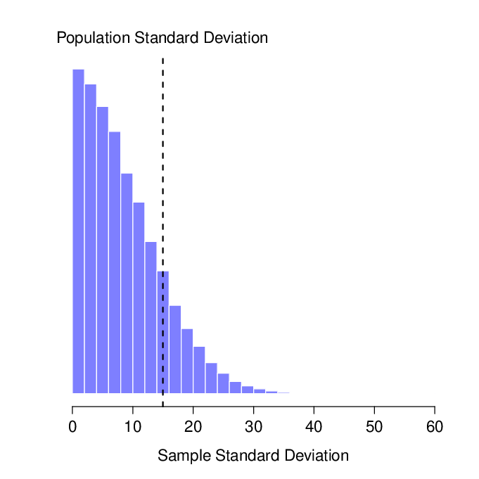

Figure 8.5: A random sample drawn from a normal distribution using jamovi
At the start of the last chapter I highlighted the critical distinction between descriptive statistics and inferential statistics. As discussed in Chapter 4, the role of descriptive statistics is to concisely summarise what we do know. In contrast, the purpose of inferential statistics is to “learn what we do not know from what we do”. Now that we have a foundation in probability theory we are in a good position to think about the problem of statistical inference. What kinds of things would we like to learn about? And how do we learn them? These are the questions that lie at the heart of inferential statistics, and they are traditionally divided into two “big ideas”: estimation and hypothesis testing. The goal in this chapter is to introduce the first of these big ideas, estimation theory, but I’m going to witter on about sampling theory first because estimation theory doesn’t make sense until you understand sampling. As a consequence, this chapter divides naturally into two parts Sections 8.1 through 8.3 are focused on sampling theory, and Sections 8.4 and 8.5 make use of sampling theory to discuss how statisticians think about estimation.
In the prelude to Part IV I discussed the riddle of induction and highlighted the fact that all learning requires you to make assumptions. Accepting that this is true, our first task to come up with some fairly general assumptions about data that make sense. This is where sampling theory comes in. If probability theory is the foundations upon which all statistical theory builds, sampling theory is the frame around which you can build the rest of the house. Sampling theory plays a huge role in specifying the assumptions upon which your statistical inferences rely. And in order to talk about “making inferences” the way statisticians think about it we need to be a bit more explicit about what it is that we’re drawing inferences from (the sample) and what it is that we’re drawing inferences about (the population).
In almost every situation of interest what we have available to us as researchers is a sample of data. We might have run experiment with some number of participants, a polling company might have phoned some number of people to ask questions about voting intentions, and so on. In this way the data set available to us is finite and incomplete. We can’t possibly get every person in the world to do our experiment, for example a polling company doesn’t have the time or the money to ring up every voter in the country. In our earlier discussion of descriptive statistics (Chapter 4) this sample was the only thing we were interested in. Our only goal was to find ways of describing, summarising and graphing that sample. This is about to change.
A sample is a concrete thing. You can open up a data file and there’s the data from your sample. A population, on the other hand, is a more abstract idea. It refers to the set of all possible people, or all possible observations, that you want to draw conclusions about and is generally much bigger than the sample. In an ideal world the researcher would begin the study with a clear idea of what the population of interest is, since the process of designing a study and testing hypotheses with the data does depend on the population about which you want to make statements.
Sometimes it’s easy to state the population of interest. For instance, in the “polling company” example that opened the chapter the population consisted of all voters enrolled at the time of the study, millions of people. The sample was a set of 1000 people who all belong to that population. In most studies the situation is much less straightforward. In a typical psychological experiment determining the population of interest is a bit more complicated. Suppose I run an experiment using 100 undergraduate students as my participants. My goal, as a cognitive scientist, is to try to learn something about how the mind works. So, which of the following would count as “the population”:
Each of these defines a real group of mind-possessing entities, all of which might be of interest to me as a cognitive scientist, and it’s not at all clear which one ought to be the true population of interest. As another example, consider the Wellesley-Croker game that we discussed in the prelude. The sample here is a specific sequence of 12 wins and 0 losses for Wellesley. What is the population?
Again, it’s not obvious what the population is.
Irrespective of how I define the population, the critical point is that the sample is a subset of the population and our goal is to use our knowledge of the sample to draw inferences about the properties of the population. The relationship between the two depends on the procedure by which the sample was selected. This procedure is referred to as a sampling method and it is important to understand why it matters.
To keep things simple, let’s imagine that we have a bag containing 10 chips. Each chip has a unique letter printed on it so we can distinguish between the 10 chips. The chips come in two colours, black and white. This set of chips is the population of interest and it is depicted graphically on the left of Figure 8.1. As you can see from looking at the picture there are 4 black chips and 6 white chips, but of course in real life we wouldn’t know that unless we looked in the bag. Now imagine you run the following “experiment”: you shake up the bag, close your eyes, and pull out 4 chips without putting any of them back into the bag. First out comes the a chip (black), then the c chip (white), then j (white) and then finally b (black). If you wanted you could then put all the chips back in the bag and repeat the experiment, as depicted on the right hand side of Figure 8.1. Each time you get different results but the procedure is identical in each case. The fact that the same procedure can lead to different results each time we refer to as a random process.1 However, because we shook the bag before pulling any chips out, it seems reasonable to think that every chip has the same chance of being selected. A procedure in which every member of the population has the same chance of being selected is called a simple random sample. The fact that we did not put the chips back in the bag after pulling them out means that you can’t observe the same thing twice, and in such cases the observations are said to have been sampled without replacement.
To help make sure you understand the importance of the sampling procedure, consider an alternative way in which the experiment could have been run. Suppose that my 5-year old son had opened the bag and decided to pull out four black chips without putting any of them back in the bag. This biased sampling scheme is depicted in Figure 8.2. Now consider the evidential value of seeing 4 black chips and 0 white chips. Clearly it depends on the sampling scheme, does it not? If you know that the sampling scheme is biased to select only black chips then a sample that consists of only black chips doesn’t tell you very much about the population! For this reason statisticians really like it when a data set can be considered a simple random sample, because it makes the data analysis much easier.
A third procedure is worth mentioning. This time around we close our eyes, shake the bag, and pull out a chip. This time, however, we record the observation and then put the chip back in the bag. Again we close our eyes, shake the bag, and pull out a chip. We then repeat this procedure until we have 4 chips. Data sets generated in this way are still simple random samples, but because we put the chips back in the bag immediately after drawing them it is referred to as a sample with replacement. The difference between this situation and the first one is that it is possible to observe the same population member multiple times, as illustrated in Figure 8.3.
In my experience, most psychology experiments tend to be sampling without replacement, because the same person is not allowed to participate in the experiment twice. However, most statistical theory is based on the assumption that the data arise from a simple random sample with replacement. In real life this very rarely matters. If the population of interest is large (e.g., has more than 10 entities!) the difference between sampling with- and without- replacement is too small to be concerned with. The difference between simple random samples and biased samples, on the other hand, is not such an easy thing to dismiss.
As you can see from looking at the list of possible populations that I showed above, it is almost impossible to obtain a simple random sample from most populations of interest. When I run experiments I’d consider it a minor miracle if my participants turned out to be a random sampling of the undergraduate psychology students at Adelaide university, even though this is by far the narrowest population that I might want to generalise to. A thorough discussion of other types of sampling schemes is beyond the scope of this book, but to give you a sense of what’s out there I’ll list a few of the more important ones.
Okay, so real world data collection tends not to involve nice simple random samples. Does that matter? A little thought should make it clear to you that it can matter if your data are not a simple random sample. Just think about the difference between Figures 8.1 and 8.2. However, it’s not quite as bad as it sounds. Some types of biased samples are entirely unproblematic. For instance, when using a stratified sampling technique you actually know what the bias is because you created it deliberately, often to increase the effectiveness of your study, and there are statistical techniques that you can use to adjust for the biases you’ve introduced (not covered in this book!). So in those situations it’s not a problem.
More generally though, it’s important to remember that random sampling is a means to an end, and not the end in itself. Let’s assume you’ve relied on a convenience sample, and as such you can assume it’s biased. A bias in your sampling method is only a problem if it causes you to draw the wrong conclusions. When viewed from that perspective, I’d argue that we don’t need the sample to be randomly generated in every respect, we only need it to be random with respect to the psychologically-relevant phenomenon of interest. Suppose I’m doing a study looking at working memory capacity. In study 1, I actually have the ability to sample randomly from all human beings currently alive, with one exception: I can only sample people born on a Monday. In study 2, I am able to sample randomly from the Australian population. I want to generalise my results to the population of all living humans. Which study is better? The answer, obviously, is study 1. Why? Because we have no reason to think that being “born on a Monday” has any interesting relationship to working memory capacity. In contrast, I can think of several reasons why “being Australian” might matter. Australia is a wealthy, industrialised country with a very well-developed education system. People growing up in that system will have had life experiences much more similar to the experiences of the people who designed the tests for working memory capacity. This shared experience might easily translate into similar beliefs about how to “take a test”, a shared assumption about how psychological experimentation works, and so on. These things might actually matter. For instance, “test taking” style might have taught the Australian participants how to direct their attention exclusively on fairly abstract test materials much more than people who haven’t grown up in a similar environment. This could therefore lead to a misleading picture of what working memory capacity is.
There are two points hidden in this discussion. First, when designing your own studies, it’s important to think about what population you care about and try hard to sample in a way that is appropriate to that population. In practice, you’re usually forced to put up with a “sample of convenience” (e.g., psychology lecturers sample psychology students because that’s the least expensive way to collect data, and our coffers aren’t exactly overflowing with gold), but if so you should at least spend some time thinking about what the dangers of this practice might be. Second, if you’re going to criticise someone else’s study because they’ve used a sample of convenience rather than laboriously sampling randomly from the entire human population, at least have the courtesy to offer a specific theory as to how this might have distorted the results.
Okay. Setting aside the thorny methodological issues associated with obtaining a random sample, let’s consider a slightly different issue. Up to this point we have been talking about populations the way a scientist might. To a psychologist a population might be a group of people. To an ecologist a population might be a group of bears. In most cases the populations that scientists care about are concrete things that actually exist in the real world. Statisticians, however, are a funny lot. On the one hand, they are interested in real world data and real science in the same way that scientists are. On the other hand, they also operate in the realm of pure abstraction in the way that mathematicians do. As a consequence, statistical theory tends to be a bit abstract in how a population is defined. In much the same way that psychological researchers operationalise our abstract theoretical ideas in terms of concrete measurements (Section 2.1), statisticians operationalise the concept of a “population” in terms of mathematical objects that they know how to work with. You’ve already come across these objects in Chapter 7. They’re called probability distributions.
The idea is quite simple. Let’s say we’re talking about IQ scores. To a psychologist the population of interest is a group of actual humans who have IQ scores. A statistician “simplifies” this by operationally defining the population as the probability distribution depicted in Figure 8.4a. IQ tests are designed so that the average IQ is 100, the standard deviation of IQ scores is 15, and the distribution of IQ scores is normal. These values are referred to as the population parameters because they are characteristics of the entire population. That is, we say that the population mean μ is 100 and the population standard deviation σ is 15.
| (a) | (b) | (c) |
Now suppose I run an experiment. I select 100 people at random and administer an IQ test, giving me a simple random sample from the population. My sample would consist of a collection of numbers like this:
Each of these IQ scores is sampled from a normal distribution with mean 100 and standard deviation 15. So if I plot a histogram of the sample I get something like the one shown in Figure 8.4b. As you can see, the histogram is roughly the right shape but it’s a very crude approximation to the true population distribution shown in Figure 8.4a. When I calculate the mean of my sample, I get a number that is fairly close to the population mean 100 but not identical. In this case, it turns out that the people in my sample have a mean IQ of 98.5, and the standard deviation of their IQ scores is 15.9. These sample statistics are properties of my data set, and although they are fairly similar to the true population values they are not the same. In general, sample statistics are the things you can calculate from your data set and the population parameters are the things you want to learn about. Later on in this chapter I’ll talk about how you can estimate population parameters using your sample statistics (Section 8.4) and how to work out how confident you are in your estimates (Section 8.5) but before we get to that there’s a few more ideas in sampling theory that you need to know about.
In the previous section I showed you the results of one fictitious IQ experiment with a sample size of N � 100. The results were somewhat encouraging as the true population mean is 100 and the sample mean of 98.5 is a pretty reasonable approximation to it. In many scientific studies that level of precision is perfectly acceptable, but in other situations you need to be a lot more precise. If we want our sample statistics to be much closer to the population parameters, what can we do about it?
The obvious answer is to collect more data. Suppose that we ran a much larger experiment, this time measuring the IQs of 10,000 people. We can simulate the results of this experiment using jamovi. The IQsim.omv file is a jamovi data file. In this file I have generated 10,000 random numbers sampled from a normal distribution for a population with mean = 100 and sd = 15. This was done by computing a new variable using the = NORM(100,15) function. A histogram and density plot shows that this larger sample is a much better approximation to the true population distribution than the smaller one. This is reflected in the sample statistics. The mean IQ for the larger sample turns out to be 99.68 and the standard deviation is 14.90. These values are now very close to the true population. See Figure 8.5
I feel a bit silly saying this, but the thing I want you to take away from this is that large samples generally give you better information. I feel silly saying it because it’s so bloody obvious that it shouldn’t need to be said. In fact, it’s such an obvious point that when Jacob Bernoulli, one of the founders of probability theory, formalised this idea back in 1713 he was kind of a jerk about it. Here’s how he described the fact that we all share this intuition:
For even the most stupid of men, by some instinct of nature, by himself and without any instruction (which is a remarkable thing), is convinced that the more observations have been made, the less danger there is of wandering from one’s goal (see Stigler 1986, p. 65)
Okay, so the passage comes across as a bit condescending (not to mention sexist), but his main point is correct. It really does feel obvious that more data will give you better answers. The question is, why is this so? Not surprisingly, this intuition that we all share turns out to be correct, and statisticians refer to it as the law of large numbers. The law of large numbers is a mathematical law that applies to many different sample statistics but the simplest way to think about it is as a law about averages. The sample mean is the most obvious example of a statistic that relies on averaging (because that’s what the mean is... an average), so let’s look at that. When applied to the sample mean what the law of large numbers states is that as the sample gets larger, the sample mean tends to get closer to the true population mean. Or, to say it a little bit more precisely, as the sample size “approaches” infinity (written as N � 8), the sample mean approaches the population mean ( � μ).3
I don’t intend to subject you to a proof that the law of large numbers is true, but it’s one of the most important tools for statistical theory. The law of large numbers is the thing we can use to justify our belief that collecting more and more data will eventually lead us to the truth. For any particular data set the sample statistics that we calculate from it will be wrong, but the law of large numbers tells us that if we keep collecting more data those sample statistics will tend to get closer and closer to the true population parameters.
The law of large numbers is a very powerful tool but it’s not going to be good enough to answer all our questions. Among other things, all it gives us is a “long run guarantee”. In the long run, if we were somehow able to collect an infinite amount of data, then the law of large numbers guarantees that our sample statistics will be correct. But as John Maynard Keynes famously argued in economics, a long run guarantee is of little use in real life.
[The] long run is a misleading guide to current affairs. In the long run we are all dead. Economists set themselves too easy, too useless a task, if in tempestuous seasons they can only tell us, that when the storm is long past, the ocean is flat again. (Keynes 1923, p. 80)
As in economics, so too in psychology and statistics. It is not enough to know that we will eventually arrive at the right answer when calculating the sample mean. Knowing that an infinitely large data set will tell me the exact value of the population mean is cold comfort when my actual data set has a sample size of N � 100. In real life, then, we must know something about the behaviour of the sample mean when it is calculated from a more modest data set!
With this in mind, let’s abandon the idea that our studies will have sample sizes of 10,000 and consider instead a very modest experiment indeed. This time around we’ll sample N � 5 people and measure their IQ scores. As before, I can simulate this experiment in jamovi = NORM(100,15) function, but I only need 5 participant IDs this time, not 10,000. These are the five numbers that jamovi generated:
The mean IQ in this sample turns out to be exactly 95. Not surprisingly, this is much less accurate than the previous experiment. Now imagine that I decided to replicate the experiment. That is, I repeat the procedure as closely as possible and I randomly sample 5 new people and measure their IQ. Again, jamovi allows me to simulate the results of this procedure, and generates these five numbers:
This time around, the mean IQ in my sample is 101. If I repeat the experiment 10 times I obtain the results shown in Table 8.1, and as you can see the sample mean varies from one replication to the next.
| Person 1 | Person 2 | Person 3 | Person 4 | Person 5 | Sample Mean | |
| Replication 1 | 90 | 82 | 94 | 99 | 110 | 95.0 |
| Replication 2 | 78 | 88 | 111 | 111 | 117 | 101.0 |
| Replication 3 | 111 | 122 | 91 | 98 | 86 | 101.6 |
| Replication 4 | 98 | 96 | 119 | 99 | 107 | 103.8 |
| Replication 5 | 105 | 113 | 103 | 103 | 98 | 104.4 |
| Replication 6 | 81 | 89 | 93 | 85 | 114 | 92.4 |
| Replication 7 | 100 | 93 | 108 | 98 | 133 | 106.4 |
| Replication 8 | 107 | 100 | 105 | 117 | 85 | 102.8 |
| Replication 9 | 86 | 119 | 108 | 73 | 116 | 100.4 |
| Replication 10 | 95 | 126 | 112 | 120 | 76 | 105.8 |
Now suppose that I decided to keep going in this fashion, replicating this “five IQ scores” experiment over and over again. Every time I replicate the experiment I write down the sample mean. Over time, I’d be amassing a new data set, in which every experiment generates a single data point. The first 10 observations from my data set are the sample means listed in Table 8.1, so my data set starts out like this:
What if I continued like this for 10,000 replications, and then drew a histogram. Well that’s exactly what I did, and you can see the results in Figure 8.6. As this picture illustrates, the average of 5 IQ scores is usually between 90 and 110. But more importantly, what it highlights is that if we replicate an experiment over and over again, what we end up with is a distribution of sample means! This distribution has a special name in statistics, it’s called the sampling distribution of the mean.
Sampling distributions are another important theoretical idea in statistics, and they’re crucial for understanding the behaviour of small samples. For instance, when I ran the very first “five IQ scores” experiment, the sample mean turned out to be 95. What the sampling distribution in Figure 8.6 tells us, though, is that the “five IQ scores” experiment is not very accurate. If I repeat the experiment, the sampling distribution tells me that I can expect to see a sample mean anywhere between 80 and 120.


One thing to keep in mind when thinking about sampling distributions is that any sample statistic you might care to calculate has a sampling distribution. For example, suppose that each time I replicated the “five IQ scores” experiment I wrote down the largest IQ score in the experiment. This would give me a data set that started out like this:
Doing this over and over again would give me a very different sampling distribution, namely the sampling distribution of the maximum. The sampling distribution of the maximum of 5 IQ scores is shown in Figure 8.7. Not surprisingly, if you pick 5 people at random and then find the person with the highest IQ score, they’re going to have an above average IQ. Most of the time you’ll end up with someone whose IQ is measured in the 100 to 140 range.
|  |  | |
| (a) | (b) | (c) |
At this point I hope you have a pretty good sense of what sampling distributions are, and in particular what the sampling distribution of the mean is. In this section I want to talk about how the sampling distribution of the mean changes as a function of sample size. Intuitively, you already know part of the answer. If you only have a few observations, the sample mean is likely to be quite inaccurate. If you replicate a small experiment and recalculate the mean you’ll get a very different answer. In other words, the sampling distribution is quite wide. If you replicate a large experiment and recalculate the sample mean you’ll probably get the same answer you got last time, so the sampling distribution will be very narrow. You can see this visually in Figure 8.8, showing that the bigger the sample size, the narrower the sampling distribution gets. We can quantify this effect by calculating the standard deviation of the sampling distribution, which is referred to as the standard error. The standard error of a statistic is often denoted SE, and since we’re usually interested in the standard error of the sample mean, we often use the acronym SEM. As you can see just by looking at the picture, as the sample size N increases, the SEM decreases.
Okay, so that’s one part of the story. However, there’s something I’ve been glossing over so far. All my examples up to this point have been based on the “IQ scores” experiments, and because IQ scores are roughly normally distributed I’ve assumed that the population distribution is normal. What if it isn’t normal? What happens to the sampling distribution of the mean? The remarkable thing is this, no matter what shape your population distribution is, as N increases the sampling distribution of the mean starts to look more like a normal distribution. To give you a sense of this I ran some simulations. To do this, I started with the “ramped” distribution shown in the histogram in Figure 8.9. As you can see by comparing the triangular shaped histogram to the bell curve plotted by the black line, the population distribution doesn’t look very much like a normal distribution at all. Next, I simulated the results of a large number of experiments. In each experiment I took N � 2 samples from this distribution, and then calculated the sample mean. Figure 8.9b plots the histogram of these sample means (i.e., the sampling distribution of the mean for N � 2). This time, the histogram produces a X-shaped distribution. It’s still not normal, but it’s a lot closer to the black line than the population distribution in Figure 8.9a. When I increase the sample size to N � 4, the sampling distribution of the mean is very close to normal (Figure 8.9c), and by the time we reach a sample size of N � 8 it’s almost perfectly normal. In other words, as long as your sample size isn’t tiny, the sampling distribution of the mean will be approximately normal no matter what your population distribution looks like!
| (a) | (b) |
| (c) | (d) |
On the basis of these figures, it seems like we have evidence for all of the following claims about the sampling distribution of the mean.
As it happens, not only are all of these statements true, there is a very famous theorem in statistics that proves all three of them, known as the central limit theorem. Among other things, the central limit theorem tells us that if the population distribution has mean μ and standard deviation σ, then the sampling distribution of the mean also has mean μ and the standard error of the mean is

This result is useful for all sorts of things. It tells us why large experiments are more reliable than small ones, and because it gives us an explicit formula for the standard error it tells us how much more reliable a large experiment is. It tells us why the normal distribution is, well, normal. In real experiments, many of the things that we want to measure are actually averages of lots of different quantities (e.g., arguably, “general” intelligence as measured by IQ is an average of a large number of “specific” skills and abilities), and when that happens, the averaged quantity should follow a normal distribution. Because of this mathematical law, the normal distribution pops up over and over again in real data.
In all the IQ examples in the previous sections we actually knew the population parameters ahead of time. As every undergraduate gets taught in their very first lecture on the measurement of intelligence, IQ scores are defined to have mean 100 and standard deviation 15. However, this is a bit of a lie. How do we know that IQ scores have a true population mean of 100? Well, we know this because the people who designed the tests have administered them to very large samples, and have then “rigged” the scoring rules so that their sample has mean 100. That’s not a bad thing of course, it’s an important part of designing a psychological measurement. However, it’s important to keep in mind that this theoretical mean of 100 only attaches to the population that the test designers used to design the tests. Good test designers will actually go to some lengths to provide “test norms” that can apply to lots of different populations (e.g., different age groups, nationalities etc).
This is very handy, but of course almost every research project of interest involves looking at a different population of people to those used in the test norms. For instance, suppose you wanted to measure the effect of low level lead poisoning on cognitive functioning in Port Pirie, a South Australian industrial town with a lead smelter. Perhaps you decide that you want to compare IQ scores among people in Port Pirie to a comparable sample in Whyalla, a South Australian industrial town with a steel refinery.5 Regardless of which town you’re thinking about, it doesn’t make a lot of sense simply to assume that the true population mean IQ is 100. No-one has, to my knowledge, produced sensible norming data that can automatically be applied to South Australian industrial towns. We’re going to have to estimate the population parameters from a sample of data. So how do we do this?
Suppose we go to Port Pirie and 100 of the locals are kind enough to sit through an IQ test. The average IQ score among these people turns out to be � 98.5. So what is the true mean IQ for the entire population of Port Pirie? Obviously, we don’t know the answer to that question. It could be 97.2, but it could also be 103.5. Our sampling isn’t exhaustive so we cannot give a definitive answer. Nevertheless, if I was forced at gunpoint to give a “best guess” I’d have to say 98.5. That’s the essence of statistical estimation: giving a best guess.
In this example estimating the unknown poulation parameter is straightforward. I calculate the
sample mean and I use that as my estimate of the population mean. It’s pretty simple,
and in the next section I’ll explain the statistical justification for this intuitive answer.
However, for the moment what I want to do is make sure you recognise that the sample
statistic and the estimate of the population parameter are conceptually different things. A
sample statistic is a description of your data, whereas the estimate is a guess about the
population. With that in mind, statisticians often different notation to refer to them. For
instance, if the true population mean is denoted μ, then we would use to refer to
our estimate of the population mean. In contrast, the sample mean is denoted or
sometimes m. However, in simple random samples the estimate of the population mean is
identical to the sample mean. If I observe a sample mean of � 98.5 then my estimate of
the population mean is also  � 98.5. To help keep the notation clear, here’s a handy
table:
� 98.5. To help keep the notation clear, here’s a handy
table:
| Symbol | What is it? | Do we know what it is? |
| Sample mean | Yes, calculated from the raw data |
|
| μ | True population mean | Almost never known for sure |
| Estimate of the population mean | Yes, identical to the sample mean in simple random samples |
|
So far, estimation seems pretty simple, and you might be wondering why I forced you to read
through all that stuff about sampling theory. In the case of the mean our estimate of the
population parameter (i.e.  ) turned out to identical to the corresponding sample statistic (i.e. ).
However, that’s not always true. To see this, let’s have a think about how to construct an estimate
of the population standard deviation, which we’ll denote
) turned out to identical to the corresponding sample statistic (i.e. ).
However, that’s not always true. To see this, let’s have a think about how to construct an estimate
of the population standard deviation, which we’ll denote  . What shall we use as our estimate
in this case? Your first thought might be that we could do the same thing we did when estimating
the mean, and just use the sample statistic as our estimate. That’s almost the right thing to do,
but not quite.
. What shall we use as our estimate
in this case? Your first thought might be that we could do the same thing we did when estimating
the mean, and just use the sample statistic as our estimate. That’s almost the right thing to do,
but not quite.
Here’s why. Suppose I have a sample that contains a single observation. For this example, it helps to consider a sample where you have no intuitions at all about what the true population values might be, so let’s use something completely fictitious. Suppose the observation in question measures the cromulence of my shoes. It turns out that my shoes have a cromulence of 20. So here’s my sample:
20
This is a perfectly legitimate sample, even if it does have a sample size of N � 1. It has a sample mean of 20 and because every observation in this sample is equal to the sample mean (obviously!) it has a sample standard deviation of 0. As a description of the sample this seems quite right, the sample contains a single observation and therefore there is no variation observed within the sample. A sample standard deviation of s � 0 is the right answer here. But as an estimate of the population standard deviation it feels completely insane, right? Admittedly, you and I don’t know anything at all about what “cromulence” is, but we know something about data. The only reason that we don’t see any variability in the sample is that the sample is too small to display any variation! So, if you have a sample size of N � 1 it feels like the right answer is just to say “no idea at all”.
Notice that you don’t have the same intuition when it comes to the sample mean and the population mean. If forced to make a best guess about the population mean it doesn’t feel completely insane to guess that the population mean is 20. Sure, you probably wouldn’t feel very confident in that guess because you have only the one observation to work with, but it’s still the best guess you can make.
Let’s extend this example a little. Suppose I now make a second observation. My data set now has N � 2 observations of the cromulence of shoes, and the complete sample now looks like this:
20, 22
This time around, our sample is just large enough for us to be able to observe some variability: two observations is the bare minimum number needed for any variability to be observed! For our new data set, the sample mean is � 21, and the sample standard deviation is s � 1. What intuitions do we have about the population? Again, as far as the population mean goes, the best guess we can possibly make is the sample mean. If forced to guess we’d probably guess that the population mean cromulence is 21. What about the standard deviation? This is a little more complicated. The sample standard deviation is only based on two observations, and if you’re at all like me you probably have the intuition that, with only two observations we haven’t given the population “enough of a chance” to reveal its true variability to us. It’s not just that we suspect that the estimate is wrong, after all with only two observations we expect it to be wrong to some degree. The worry is that the error is systematic. Specifically, we suspect that the sample standard deviation is likely to be smaller than the population standard deviation.

This intuition feels right, but it would be nice to demonstrate this somehow. There are in fact mathematical proofs that confirm this intuition, but unless you have the right mathematical background they don’t help very much. Instead, what I’ll do is simulate the results of some experiments. With that in mind, let’s return to our IQ studies. Suppose the true population mean IQ is 100 and the standard deviation is 15. First I’ll conduct an experiment in which I measure N � 2 IQ scores and I’ll calculate the sample standard deviation. If I do this over and over again, and plot a histogram of these sample standard deviations, what I have is the sampling distribution of the standard deviation. I’ve plotted this distribution in Figure 8.10. Even though the true population standard deviation is 15 the average of the sample standard deviations is only 8.5. Notice that this is a very different result to what we found in Figure 8.8b when we plotted the sampling distribution of the mean, where the population mean is 100 and the average of the sample means is also 100.
Now let’s extend the simulation. Instead of restricting ourselves to the situation where N � 2,
let’s repeat the exercise for sample sizes from 1 to 10. If we plot the average sample mean and
average sample standard deviation as a function of sample size, you get the results shown in
Figure 8.11. On the left hand side (panel a) I’ve plotted the average sample mean and on the right
hand side (panel b) I’ve plotted the average standard deviation. The two plots are quite different:on
average, the average sample mean is equal to the population mean. It is an unbiased estimator,
which is essentially the reason why your best estimate for the population mean is the sample
mean.6
The plot on the right is quite different: on average, the sample standard deviation s is smaller than
the population standard deviation σ. It is a biased estimator. In other words, if we want
to make a “best guess”  about the value of the population standard deviation σ we
should make sure our guess is a little bit larger than the sample standard deviation
s.
about the value of the population standard deviation σ we
should make sure our guess is a little bit larger than the sample standard deviation
s.
| (a) | (b) |
The fix to this systematic bias turns out to be very simple. Here’s how it works. Before tackling the standard deviation let’s look at the variance. If you recall from Section 4.2, the sample variance is defined to be the average of the squared deviations from the sample mean. That is:
 2 not s2, that’s why. A similar story applies for the standard deviation.
If we divide by N � 1 rather than N our estimate of the population standard deviation
becomes:
2 not s2, that’s why. A similar story applies for the standard deviation.
If we divide by N � 1 rather than N our estimate of the population standard deviation
becomes:
 , not
s.7
, not
s.7
One final point. In practice, a lot of people tend to refer to  (i.e., the formula where we divide
by N � 1) as the sample standard deviation. Technically, this is incorrect. The sample standard
deviation should be equal to s (i.e., the formula where we divide by N). These aren’t the same
thing, either conceptually or numerically. One is a property of the sample, the other is an estimated
characteristic of the population. However, in almost every real life application what we actually
care about is the estimate of the population parameter, and so people always report
(i.e., the formula where we divide
by N � 1) as the sample standard deviation. Technically, this is incorrect. The sample standard
deviation should be equal to s (i.e., the formula where we divide by N). These aren’t the same
thing, either conceptually or numerically. One is a property of the sample, the other is an estimated
characteristic of the population. However, in almost every real life application what we actually
care about is the estimate of the population parameter, and so people always report  rather than s. This is the right number to report, of course. It’s just that people tend to
get a little bit imprecise about terminology when they write it up, because “sample
standard deviation” is shorter than “estimated population standard deviation”. It’s no big
deal, and in practice I do the same thing everyone else does. Nevertheless, I think it’s
important to keep the two concepts separate. It’s never a good idea to confuse “known
properties of your sample” with “guesses about the population from which it came”. The
moment you start thinking that s and
rather than s. This is the right number to report, of course. It’s just that people tend to
get a little bit imprecise about terminology when they write it up, because “sample
standard deviation” is shorter than “estimated population standard deviation”. It’s no big
deal, and in practice I do the same thing everyone else does. Nevertheless, I think it’s
important to keep the two concepts separate. It’s never a good idea to confuse “known
properties of your sample” with “guesses about the population from which it came”. The
moment you start thinking that s and  are the same thing, you start doing exactly
that.
are the same thing, you start doing exactly
that.
To finish this section off, here’s another couple of tables to help keep things clear.
| Symbol | What is it? | Do we know what it is? |
| s | Sample standard deviation | Yes, calculated from the raw data |
| σ | Population standard deviation | Almost never known for sure |
 | Estimate of the population | Yes, but not the same as the |
| standard deviation | sample standard deviation | |
| Symbol | What is it? | Do we know what it is? |
| s2 | Sample variance | Yes, calculated from the raw data |
| σ2 | Population variance | Almost never known for sure |
| 2 | Estimate of the population | Yes, but not the same as the |
| variance | sample variance | |
Statistics means never having to say you’re certain
– Unknown origin8
Up to this point in this chapter, I’ve outlined the basics of sampling theory which statisticians rely on to make guesses about population parameters on the basis of a sample of data. As this discussion illustrates, one of the reasons we need all this sampling theory is that every data set leaves us with a some of uncertainty, so our estimates are never going to be perfectly accurate. The thing that has been missing from this discussion is an attempt to quantify the amount of uncertainty that attaches to our estimate. It’s not enough to be able guess that, say, the mean IQ of undergraduate psychology students is 115 (yes, I just made that number up). We also want to be able to say something that expresses the degree of certainty that we have in our guess. For example, it would be nice to be able to say that there is a 95% chance that the true mean lies between 109 and 121. The name for this is a confidence interval for the mean.
Armed with an understanding of sampling distributions, constructing a confidence interval for the mean is actually pretty easy. Here’s how it works. Suppose the true population mean is μ and the standard deviation is σ. I’ve just finished running my study that has N participants, and the mean IQ among those participants is . We know from our discussion of the central limit theorem (Section 8.3.3) that the sampling distribution of the mean is approximately normal. We also know from our discussion of the normal distribution Section 7.5 that there is a 95% chance that a normally-distributed quantity will fall within about two standard deviations of the true mean.
To be more precise, the more correct answer is that there is a 95% chance that a normally-distributed quantity will fall within 1.96 standard deviations of the true mean. Next, recall that the standard deviation of the sampling distribution is referred to as the standard error, and the standard error of the mean is written as SEM. When we put all these pieces together, we learn that there is a 95% probability that the sample mean that we have actually observed lies within 1.96 standard errors of the population mean.
Mathematically, we write this as:
Of course, there’s nothing special about the number 1.96. It just happens to be the multiplier you need to use if you want a 95% confidence interval. If I’d wanted a 70% confidence interval, I would have used 1.04 as the magic number rather than 1.96.
As usual, I lied. The formula that I’ve given above for the 95% confidence interval is approximately
correct, but I glossed over an important detail in the discussion. Notice my formula requires you to
use the standard error of the mean, SEM, which in turn requires you to use the true
population standard deviation σ. Yet, in Section 8.4 I stressed the fact that we don’t
actually know the true population parameters. Because we don’t know the true value
of σ we have to use an estimate of the population standard deviation  instead. This
is pretty straightforward to do, but this has the consequence that we need to use the
percentiles of the t-distribution rather than the normal distribution to calculate our
magic number, and the answer depends on the sample size. When N is very large, we get
pretty much the same value using the t-distribution or the normal distribution: 1.96.
But when N is small we get a much bigger number when we use the t distribution:
2.26.
instead. This
is pretty straightforward to do, but this has the consequence that we need to use the
percentiles of the t-distribution rather than the normal distribution to calculate our
magic number, and the answer depends on the sample size. When N is very large, we get
pretty much the same value using the t-distribution or the normal distribution: 1.96.
But when N is small we get a much bigger number when we use the t distribution:
2.26.
There’s nothing too mysterious about what’s happening here. Bigger values mean that the confidence interval is wider, indicating that we’re more uncertain about what the true value of μ actually is. When we use the t distribution instead of the normal distribution we get bigger numbers, indicating that we have more uncertainty. And why do we have that extra uncertainty? Well, because our estimate of the population standard deviation might be wrong! If it’s wrong, it implies that we’re a bit less sure about what our sampling distribution of the mean actually looks like, and this uncertainty ends up getting reflected in a wider confidence interval.
The hardest thing about confidence intervals is understanding what they mean. Whenever people first encounter confidence intervals, the first instinct is almost always to say that “there is a 95% probability that the true mean lies inside the confidence interval”. It’s simple and it seems to capture the common sense idea of what it means to say that I am “95% confident”. Unfortunately, it’s not quite right. The intuitive definition relies very heavily on your own personal beliefs about the value of the population mean. I say that I am 95% confident because those are my beliefs. In everyday life that’s perfectly okay, but if you remember back to Section 7.2, you’ll notice that talking about personal belief and confidence is a Bayesian idea. However, confidence intervals are not Bayesian tools. Like everything else in this chapter, confidence intervals are frequentist tools, and if you are going to use frequentist methods then it’s not appropriate to attach a Bayesian interpretation to them. If you use frequentist methods, you must adopt frequentist interpretations!
Okay, so if that’s not the right answer, what is? Remember what we said about frequentist probability. The only way we are allowed to make “probability statements” is to talk about a sequence of events, and to count up the frequencies of different kinds of events. From that perspective, the interpretation of a 95% confidence interval must have something to do with replication. Specifically, if we replicated the experiment over and over again and computed a 95% confidence interval for each replication, then 95% of those intervals would contain the true mean. More generally, 95% of all confidence intervals constructed using this procedure should contain the true population mean. This idea is illustrated in Figure 8.12, which shows 50 confidence intervals constructed for a “measure 10 IQ scores” experiment (top panel) and another 50 confidence intervals for a “measure 25 IQ scores” experiment (bottom panel). A bit fortuitously, across the 100 replications that I simulated, it turned out that exactly 95 of them contained the true mean.
| (a) | |
| (b) |
The critical difference here is that the Bayesian claim makes a probability statement about the population mean (i.e., it refers to our uncertainty about the population mean), which is not allowed under the frequentist interpretation of probability because you can’t “replicate” a population! In the frequentist claim, the population mean is fixed and no probabilistic claims can be made about it. Confidence intervals, however, are repeatable so we can replicate experiments. Therefore a frequentist is allowed to talk about the probability that the confidence interval (a random variable) contains the true mean, but is not allowed to talk about the probability that the true population mean (not a repeatable event) falls within the confidence interval.
I know that this seems a little pedantic, but it does matter. It matters because the difference in interpretation leads to a difference in the mathematics. There is a Bayesian alternative to confidence intervals, known as credible intervals. In most situations credible intervals are quite similar to confidence intervals, but in other cases they are drastically different. As promised, though, I’ll talk more about the Bayesian perspective in Chapter 16.
As far as I can tell, jamovi does not (yet) include a simple way to calculate confidence intervals for the mean as part of the ‘Descriptives’ functionality. But the ‘Descriptives’ do have a check box for the S.E. Mean, so you can use this to calculate the lower 95% confidence interval as:
Mean - (1.96 * S.E. Mean) , and the upper 95% confidence interval as:
Mean + (1.96 * S.E. Mean)
95% confidence intervals are the de facto standard in psychology. So, for example, if I load the IQsim.omv file, check mean and S.E mean under ‘Descriptives, I can work out the confidence interval associated with the simulated mean IQ:
Lower 95% CI = 99.68 - (1.96 * 0.15) = 99.39
Upper 95% CI = 99.68 + (1.96 * 0.15) = 99.98
So, in our simulated large sample data with N=10,000, the mean IQ score is 99.68 with a 95% CI from 99.39 to 99.98. Hopefully that’s fairly clear. So, although there currently is not a straightforward way to get jamovi to calculate the confidence interval as part of the variable ‘Descriptives’ options, if we wanted to we could pretty easily work it out by hand.
Similarly, when it comes to plotting confidence intervals in jamovi, this is not (yet) available as part of the ‘Descriptives’ options. However, when we get onto learning about specific statistical tests, for example in Chapter 13, we will see that we can plot confidence intervals as part of the data analysis. That’s pretty cool, so we’ll show you how to do that later on.
In this chapter I’ve covered two main topics. The first half of the chapter talks about sampling theory, and the second half talks about how we can use sampling theory to construct estimates of the population parameters. The section breakdown looks like this:
As always, there’s a lot of topics related to sampling and estimation that aren’t covered in this chapter, but for an introductory psychology class this is fairly comprehensive I think. For most applied researchers you won’t need much more theory than this. One big question that I haven’t touched on in this chapter is what you do when you don’t have a simple random sample. There is a lot of statistical theory you can draw on to handle this situation, but it’s well beyond the scope of this book.